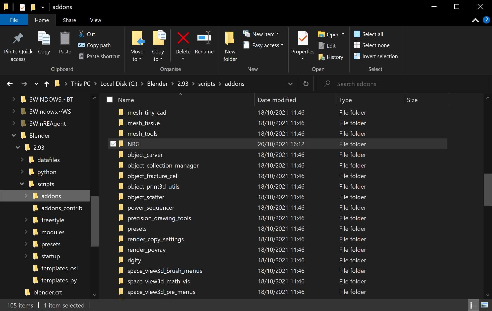
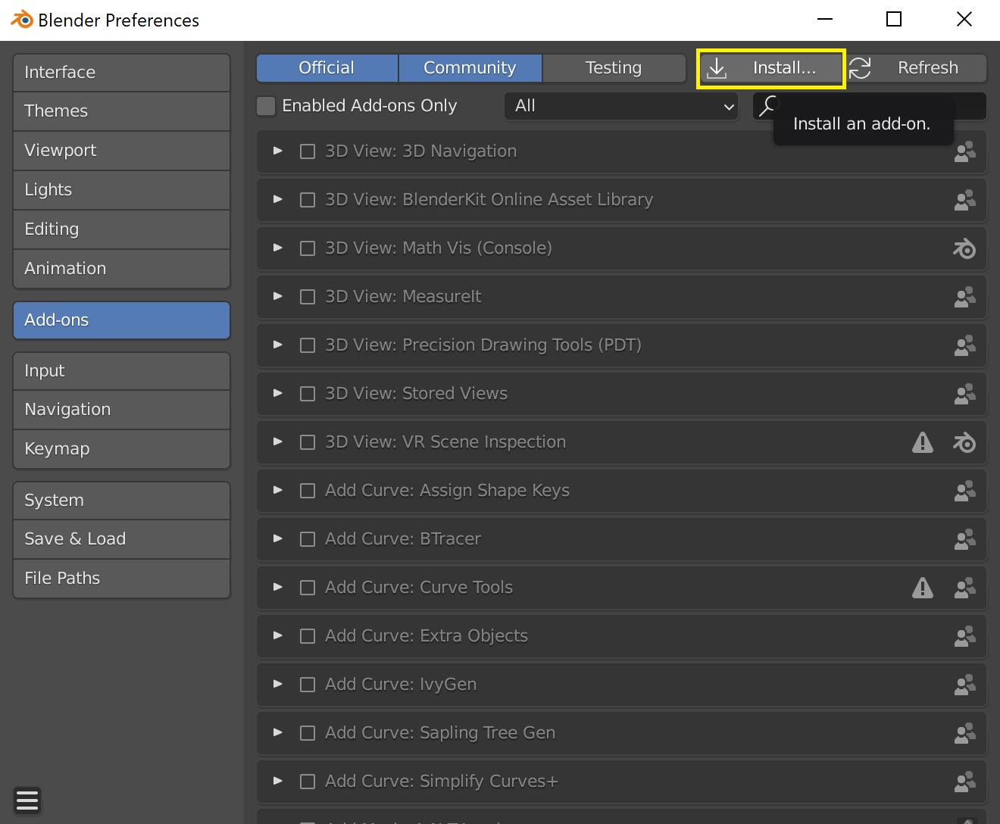
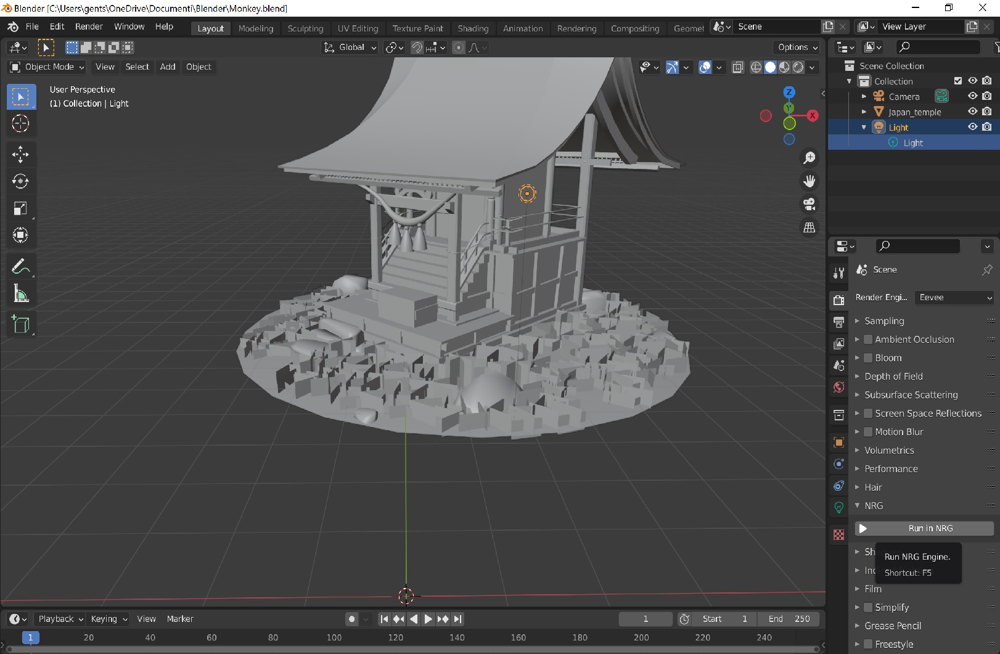

INOX
Rust Game engine integrated in Blender


INOX
It's a Game Engine written in Rust with some bindings for external libs and with Blender as editor.
INOX is a game engine written in Rust and developed by GENTS.
The main idea behind INOX is to use Blender as external editor, even being able to create visual logic scripting nodes in it, and then have a button to launch the Rust engine, that should be scalable to create games of any scale and for users with every kind of experience.
Rust will give to INOX high performance, reliability and safe code, while Blender will bring easy customization and powerful editor capabilities.
Why INOX?
Well... because even if made in Rust it should become an inoxidable game development engine :)
Vision
The engine is developed with following pillars:
- The game engine should be obviously written in Rust
- The engine should support multiple platforms (PC, Mobile, Sony Playstation, Microsoft XBox, Nintendo Switch, etc)
- The rendering engine should support different GFX API as well (like Vulkan, DirectX, Metal, etc)
- The engine should be multi-threaded both on CPU and GPU to reach high-end performances
- The engine should support streaming, quick background loading and hot-reload of Code and Data
- Blender should be used as external 3D scene, Material, Animation and other content edition
- INOX should generate a Blender addon that could be installed in order to launch and communicate with it
- Blender should be used as external editor with new custom INOX editors (like Logic Node Visual Scripting, etc)
- From Blender the user should be able to see the same scene rendered in INOX just pressing a button
- INOX Engine could be used just as a high quality rendering engine
- INOX Engine could be used to run game logic
Notes
Not ready yet for production. INOX is in active development, it still lacks many features code architecture or interfaces could still change. New releases could still have breaking changes.
Features
Here you can find a list of features that are currently supported by the library.
-
Multi platform architecture
Windows only implemented right now
rawwindowhandle integrated and working on WASM intergration -
Multi graphics api support
wgpu integration done -
Multi threading architecture with different Phases > Systems > Jobs
See more info in sabicore crate section related to scheduling -
CPU profiling using Chrome Trace Event format and usable through chrome://tracing/
See more info in sabiprofiler crate section - GPU profiling using RenderDoc by Baldurk Karlsson
-
Blender addon written in Python and Rust built and copied into right folder to be used right away
See more info in sabiblender crate section) -
Launch and execute SABI directly from Blender
Exporting scene as Khronos GLTF, binarizing and loading it into SABI -
Data binarization, shader compilation, etc as background task
See more info in sabibinarizer crate section - Hot reload of code while INOX engine is running
- Hot reload of data reloading on the fly while INOX engine is running
- In-game GUI integration using egui by emilk
- Documentations using mdBook
- Continous integration and build support using Github Actions
- INOX <-> Blender communication through TCP connection
- Create custom Logic Nodes editor in Blender
- Possibility to define and use custom nodes in external dlls
TODO:
- Integrate wasm as target
- Possibility to run Phases in parallel when not dependent
- Plugin indipendent and ability to enable\disable them at runtime
- Integrate PBR rendering
- Quick example of game
- Integrate KTX universal texture compression
- Integrate raw-window-handle as optional feature
- Raytracing on GPU
- Dynamic vertex data per-shader
Getting Started
In this page you'll find info related to:
How to setup Blender add-on
Every time that the code is updated a new version of the add-on is built and uploaded to the repository. You can download latest version directly from here
Once that you downloaded it, you've two options install it or extract it in your Blender add-on folder. Usually the path is something like [Blender folder]/[version]/[scripts]/[addons
If you extracted it, you should have now an INOX folder inside your add-on folder:

How to enable the INOX addon directly in Blender
You should go in the Add-ons panel and enable the INOX add-on

If you want to install it you've to choose the INOX.zip file that you've downloaded and install it.

Or if you've extracted the INOX folder inside the Blender add-on folder, you should already have it into the addons list.
You've to enable it in the Blender preferences
Once enabled please remember to setup add-on parameters, like the folder where you've the INOX binaries. This step is mainly available to allow users to have INOX binaries in a different folder, if needed (as example for the one working directly in code could be useful to set it to build output directory).

How to use the INOX addon in Blender
Once that the INOX add-on is enabled and correctly setup, you should be able to edit your scene and run the INOX viewer just pressing F5 or going in the Render Properties panel and pressing Run in INOX button under the SABI dropdown tab:

INOX Development Guide
Building INOX code
How to download INOX repository
You can clone it using https://github.com/gents83/INOX.git
Or you can download the zip from here
How to build and run INOX code
Once that you've cloned and downloaded the repository, you can build it by running the following commands:
git submodule update --init --recursive
The above command is needed to download all extern submodules and could require some time.
cargo build --manifest-path ./crates/Cargo.toml
The above command build the project in debug but you can switch to release adding --release at the end.
cargo run --manifest-path ./crates/Cargo.toml -- -plugin inox_viewer
The above command run the inox_launcher executable with the inox_viewer plugin.
Please provided needed command line parameters, like the -file_to_load 'path'
See the section Command line parameters accepted by inox_launcher
How to use Microsoft VSCode launch and tasks created for INOX on Windows
If you are using Microsoft VSCode on Windows you can benefits of several shortcuts to build and execute INOX code.
Using the SABI.code-workspace file will allow you to get even raccomandation on useful extensions to maximise the VSCode experience.
Let's see some useful shortcuts.
-
When building or pressing CTRL+SHIFT+B:
You'll have many debug possibilities as:- BUILD DEBUG - Build workspace in debug
- BUILD RELEASE WASM - Build workspace in release with wasm as target
- BUILD RELEASE - Build workspace in release
- BUILD BOOK - Build and launch a rendered version of documentation in
/docs/folder - RUN CLIPPY - Execute clippy fix on crates code and check if there are any errors
- CHECK CRATES DEPENDENCIES - Check crates dependencies detecting and warning on unused ones.
-
When debugging or pressing F5:
You'll have many debug possibilities as:- RUN LAUNCHER DEBUG - Run the launcher in debug mode
- RUN LAUNCHER RELEASE - Run the launcher in release mode
- RUN VIEWER RELEASE - Run the viewer with a test scene (customizable in
/.vscode/launch.json)
Command line parameters accepted by inox_launcher
-
-plugin [name]:
The plugin to use.
You can specify names of crates inside apps folder like inox_viewer, inox_editor, etc
When not specified an empty window will be opened with only the binarizer executing in background. -
-load_file [path]:
A path of a scene to load with path relative to/data/
As example could be./data/blender_export/TestScene/TestScene.scene_data
How to setup your marchine for Android platform
Install AndroidSDK and NDK and setup environment variables (ANDROID_SDK_ROOT and ANDROID_NDK_ROOT).
Going through Android Studio could be an easy win solution - just remember to go into SDK Manager and install then the Android NDK.
(https://mozilla.github.io/firefox-browser-architecture/experiments/2017-09-21-rust-on-android.html)
Install cargo-apk with cargo install cargo-apk.
Add desired android targets with rustup target add <triple>.
Run cargo apk run -p android-build optionally with the flag --target <triple> for explicit target selection.
How to setup your marchine for Web platform
Add wasm target with rustup target add wasm32-unknown-unknown
Use Google Chrome Canary and enable Unsafe WebGPU in chrome://flags/
Architecture
INOX Crates
In this page you'll find a list of crates and their description and main concepts of the INOX project:
-
app:
It's the entry point crate of every INOX application.
It's basically a launcher that load different plugins dinamically or statically depending on platforms.
It also contains the basic window system and the main loop. -
binarizer:
This crate is used on pc platforms to binarize raw data into INOX data format. It supports simple copy, font texture generation, gltf conversion, textures and shaders. -
blender:
This crate contains the interoperability between Blender and INOX engine. -
commands:
It's a useful crate to handle command line parsing easily. -
core:
This crate is the real core of INOX engine.
It contains the real application loop, the scheduler, phases and job system and the handling of plugins. -
filesystem:
File handling for different platforms, dinamic library loading and file watchers. -
graphics:
All graphics related stuff of INOX engine.
From renderer to shaders, textures, meshes, materials, fonts and all other resources handling.
It lies on top of wgpu -
log:
It's a useful crate to handle logging on different platforms. -
math:
This crate contains math classes and utilities.
It wraps cgmath crate. -
messenger:
Message handlers and message communication crate.
It's at the core of INOX engine and it's used to handle messages between different parts of the engine. -
nodes:
It's a useful crate to handle node graphs, input and output pins and connections. -
platform:
Basic platform code for windowing and input handling. -
plugins:
In this folder you can find several plugins that you can use for your application.
They can be used alone or combined together with other plugins easily. -
profiler:
It's a useful crate to handle profiling.
It stores data to be used with chrome:://tracing but it can very easily extended if needed. -
resources:
It contains resource concept and shared data that is at the core of ECS paradigm of INOX engine. -
scene:
This crate has scene, object and its components (like camera, script, etc). -
serialize:
INOX engine serialization and deserialization library. -
timetime:
It's a useful crate to handle timer and fps computation. -
ui:
This crate contains ui system, widget handling and wraps egui. -
uid:
It's a useful crate to handle unique identifiers generation and handling.
External Dependencies
In this page you'll find a list of external dependencies that are required from the INOX engine
and that are referenced as git submodules inside the /extern/ folder.
- cgmath:
A linear algebra and mathematics library for computer graphics
Used in INOX as math library for vectors, matrices, quaternions, etc. - downcast-rs:
Adds downcasting support to trait objects using only safe Rust
Used in INOX for trait downcasting. - egui:
An easy-to-use immediate mode GUI in pure Rust
Used in INOX for in-game tooling and debug UI. - erased-serde:
Trait serialization and deserialization for Rust
Used in INOX for trait serialization and deserialization purposes. - gltf-rs:
A crate for loading glTF 2.0
Used in INOX for GLTF file loading and parsing. - image-rs:
Encoding and decoding images and textures in Rust
Used in INOX for images loading and saving. - serde-json:
Strongly typed JSON library for Rust
Used in INOX for serialization and deserialization purposes of data. - meshopt-rs:
Rust ffi and idiomatic wrapper for zeux/meshoptimizer, a mesh optimization library that makes indexed meshes more GPU-friendly.
Used in INOX for mesh optimization and clustering. - pyo3:
Rust bindings for the Python interpreter
Used in INOX for Blender add-on interactions. - rand:
A Rust library for random number generation.
Used in INOX for random number generation. - raw-window-handle:
A common windowing interoperability library for Rust
Used in INOX for shared window and handle concepts needed by wpgu. - serde:
Serialization framework for Rust
Used in INOX for serialization and deserialization purposes. - ttf-parser:
A high-level, safe, zero-allocation TrueType font parser
Used in INOX for TrueType fonts loading and parsing. - uuid:
Generate and parse UUIDs.
Used in INOX for all resource IDs and for every UUID generated. - wasm-bindgen:
Facilitating high-level interactions between Wasm modules and JavaScript
Used in INOX for wasm and javascript bindings. - wgpu:
Safe and portable GPU abstraction in Rust, implementing WebGPU API
Used in INOX for cross-platform graphics shared api
Sponsor
I'm Mauro Gentile aka GENTS.
I work in videogame industry since a long time and on several differenti projects but in September 2020 I decided in my spare time to learn Rust programming language and quickly I become a real rustucean. I decided to use Rust and I also wanted to use all my personal knowledge to write a new Game Engine from scratch in Rust on my own (but contributions could be an option to consider)
Working on INOX is really absorbing me a lot of energies and it would be awesome to get some contributions to continue to push it forward and accomplish its vision.
Take a look to INOX here: https://github.com/gents83/NRG